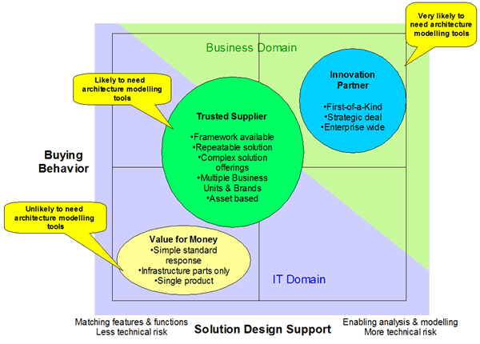
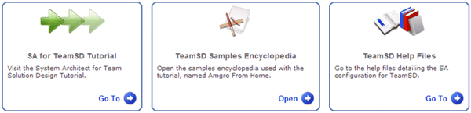
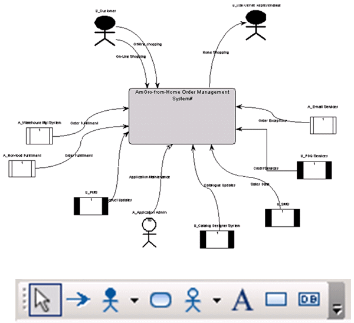
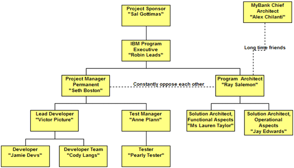
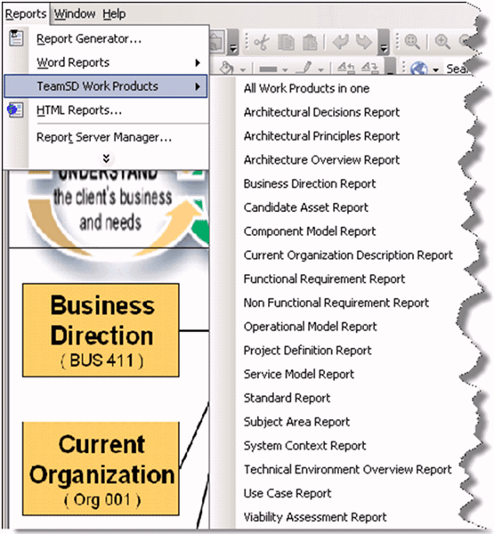

| Tool Mentor: Rational System Architect for Team Solution Design |
 |
|
1.0 Purpose The purpose of this tool mentor is to provide basic background on the use of IBM's Rational System Architect in support of Team Solution Design. This paper does not include specific guidance on the creation of individual elements such as work products. 2.0 IBM Rational System Architect - a Brief Description Rational System Architect is comprised of a rich set of components that enable the capture, design, modeling, and creation of enterprise systems. All design information is stored in a multi-user repository called the encyclopedia. An encyclopedia is created as a database in either SQL Server, SQL Server Express or Oracle. Rational System Architect provides a drawing workspace to graphically build the models representing the business system, application, or database design being modeled. It provides many options for drawing, displaying, and viewing items in the workspace. You may also print diagrams, and automatically create certain types of models using Rational System Architect’s various reverse engineering capabilities. Rational System Architect’s Explorer is a multi-purpose navigation interface that displays, in a hierarchical tree, encyclopedia diagrams and definitions. It opens automatically when you open the product. You can view diagrams and definitions, open them, edit them, make them read-only, or delete them through the Explorer. By using the filter option, you can choose which definition and diagrams type you want to display. Rational System Architect offers significant advantages over an ordinary drawing tool when creating model based artifacts. Model elements such as Actor, Component or Node can be created separately. When incorporated in views, these elements automatically retain their underlying attributes and consistency. Rational System Architect has been enhanced to support Team Solution Design. This enhancement is in the form of a special configuration referred to as SA4TeamSD. With this configuration, all TeamSD artifacts can be created and published. These artifacts can also be created with greater elaboration than normally required in a pre-sale environment. This allows the tool to address more complex designs when required. For information on availability of SA4TeamSD, refer to http://w3-03.ibm.com/support/tsdesign/help5.html . The need for architectural modeling tools such as System Architect will vary, as explained in the following illustration.  3.0 Using the SA4TeamSD configuration of System Architect The SA4TeamSD configuration supports TeamSD by adding a tutorial, help files and a design example called "Amgro from Home"  3.1 Text Based Artifacts SA4TeamSD can be used to capture information for text based artifacts. The following illustration depicts the creation of a portion of Project Definition.
3.2 Free Form Artifacts SA4TeamSD can be used to develop free form artifacts. The following illustration depicts a basic free form diagram and the tool bar used to create it. Free form artifacts can include model elements in the drawing but do not enforce consistency in an underlying model. 
The following example illustrates a free form Architecture Overview Diagram.
3.3 Organization Chart Diagrams The following example illustrates the capability to draw free form organization charts.  3.4 Model Based Artifacts SA4TeamSD can be used to create model based elements and views. This means that changes to any model element will be reflected in the model view where it is included. The following example illustrates a portion of a component model.
3.4.1 Creating Model Elements Model elements are created and contained separately. The following illustration depicts the creation of a model element. This component can then be added to a model view by simply dragging and dropping onto the view being created.
4.0 Publishing Completed Designs SA4TeamSD can be used to publish individual artifacts or complete solution designs. The following illustration shows what individual work products are available for publishing.  The following illustration depicts a page from the Use Case Model report
|
| Content Lead | tlseeve@us.ibm.com |
|---|---|
| Change Date | Tue May 03 23:37:50 IST 2011 |
| Revisions | July 2010 - baseline version |
© Copyright IBM Corp. 1987, 2016 All Rights Reserved |